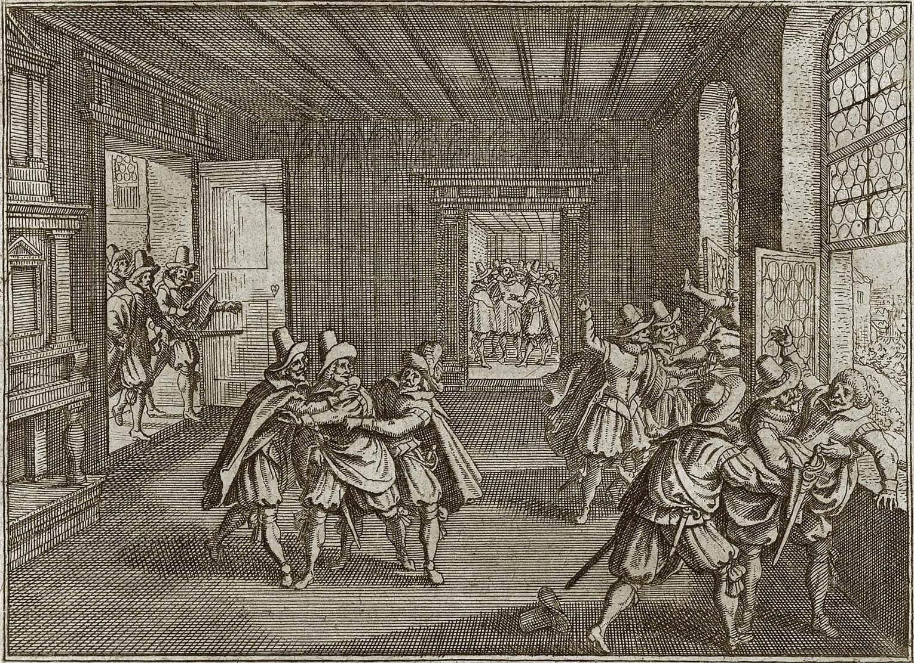
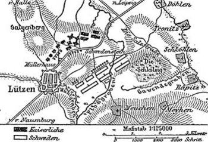

Antecendenti
La guerra dei 30 anni fu un conflitto devastante che coinvolse gran parte delle potenze europee dell'epoca, in particolare il Sacro Romano Impero.Iniziata come una guerra religiosa tra protestanti e cattolici, si trasformò in una lotta per l'equilibrio politico europeo.

A seguito della pace di Augusta, del 1555, nella germania vigeva il principio Cuius regio, eius religio : ("Di chi [è] la regione, di lui [sia] la religione", cioè i sudditi seguano la religione del proprio governante); questa scelta mirava a a una pace tra i credi. Nonostante questo le tensioni religiose si intesificarono durante la seconda metà del XVI secolo; e il Calvinismo, ramo protestante non riconosciuto nella pace di Augusta, continuava sempre di più ad espandersi.
In mezzo a tutte queste tensioni esplode la rivolta di Boemia, attuale Repubblica Ceca: nel 1618, l'imperatore del Sacro Romano Impero, Mattia d'Asburgo, che era anche re di Boemia, aveva abdicato al trono di quest'ultima a favore del parente maschio più prossimo, ovvero Ferdinando II d'Asburgo, ferreo difensore del cattolicesimo. Questa scelta accese il risentimento nei nobili, per la maggioranza protestanti; inoltre il nuovo reggente, vietò la costruzione di alcune chiese protestanti e ritirò della lettera di maestà, che concedeva ai boemi libertà di culto. Queste politiche provocarono la ribellione che culminò nella defenestrazione di Praga del 23 maggio 1618: due luogotenenti dell'imperatore e il segretario del Consiglio reale furono scaraventati giù dalle finestre del palazzo reale; i tre rimasero gravemente feriti, ma sopravvissero.
L'incidente fu il casus belli che diede inizio alla guerra dei Trent'anni.
Il conflitto
La guerra si svolse in 3 fasi:
- La fase Danese (1618-1630)
A seguito degli eventi del 23 maggio, Ferdinando II chiese aiuto a re Filippo III di spagna, anchesso della casa d'Asburgo; dal canto loro, la nobilità boema offri la corona a Federico V del palatinato, elettore imperiale calvinista. Dopo due anni di conflitto, la fazione cattolica stronca la rivolta.In seguito il bando vincitore invade il palatinato.
Sentitosi minacciato dalla presenza spagnola, il re di Danimarca Cristiano V, entrò in guerra alleandosi con i principi protestanti nel 1624 ed iniziando una campagna militare l'anno dopo con il finanziamento della Francia di Richelieu. Quest'ultima si sentiva minacciata dalla casa d'Asburgo perchè il paese gallo era in mezzo ai suoi possedimenti.
In risposta Ferdinando II contratta il Boemo Albert Von Wallenstain e il suo esercito di mercenari. Nel settembre del 1628 i mercenari sconfiggono definitivamente le forze danesi che firmano la pace e si ritirano. Nel 1630 Ferdinando II convocò la dietà di ratisbona ed emanò l'editto di Restituzione, in forza del quale dovevano essere riconsegnati alla Chiesa cattolica tutti i beni confiscati a seguito della Pace di Augusta del 1555 e che il titolo imperiale diventasse erediatario per la sua casata. Ciò provocò la reazione dei principi protestanti non ancora coinvolti nel conflitto e la discesa in campo della Svezia. - La fase Svedese(1631-1635)
 Nel 1631, re Gustavo Adolfo di Svezia entrò i guerra ed iniziò a collezionare vittorie su vittorie ai danni dei cattolici. La Svezia era entrata in guerra in codizioni simili a quelle danesi ma la differenza era che il suo esercito era moderno e professionale. Davanti a queste vittorie e all'avanzata svedese, Wallenstain, che precedentemente era stato licenziato in quanto sospettato di tradimento, viene contrattato e, nel 1632 si scontra con Gustavo II nella battaglia di Lützen. Lo scontro vide la vittoria scandinava ma anche la morte del re.
I sospetti sulla lealtà di Wallenstain accrebbero nuovamente davanti a rumori di negozazione tra il mercenario e gli Svedesi; per tale motivo fu assasinato nel 1634, mettendo fine al comandante che più vittorie aveva ottenuto per i cattolici. Nonostante questo l'esercito imperiale ottenne la vittoria in questa terza fase nella battaglia di Nördlingen.A seguito gli sverdesi si arresero e nel 1635 venne firmata la pace di praga che vedeva la ritirata svedese.
In pratica gli Asburgo mantenevano il loro potere e questo non soddisfo i francesi che avevano investito nella guerra. Con questo e approfittando il gran logoramento della casata dopo tre fasi di guerra, il cardinale Richelieu prepara la francia per la guerra. - La fase Francese(1636-1648)
Nel 1636 inizia l'ultima fase della guerra. la francia convince gli Svedesi e Olandesi a contrattaccare (questi ultimi stavano combattendo la guerra degli 80 anni per la loro indipendenza dagli spagnoli). La spagna prova a raggiungere parigi dalla sua base nelle fiandre ma nel 1640 devono affrontare una crisi interna, che fu decisiva nella guerra: il cardinale Richelie aveva fomenta ribelioni in catalogna e portogallo, con il quale la spagna era in unione dinastica dal 1580. Dovendo affrontare questi eventi la spagna è sconfitta definitivamente dai francesi nella battaglia di Rocroi del 1643. Nel fonte del sacro romano impero, la Svezia sconfigge le forze imperiali nella battaglia di Jankov del 1645. Con un esercito decimato, la germania è invasa dall'ovest dagli svedesi e dall'est dai francesi. La fazione Franco-svedese da gli ultimi colpi agli spagnoli nella dattaglia di Lens e all'impero nella battaglia di Zusmarshausen, tutte e due avvenute nel 1648.
Fine guerra e conseguenze
Fu così che nel 1648 l'imperatore Ferdinando III firmò la pace di Westfalia: la francia ottenne alcune città su Reno; la Svezia ottenne alcuni porti tedeschi(come Strasuld); la svizzera e le province unite ottennero l'indipendenza; i vari stati tedeschi ottennero il diritto di esercitare una politica estera autonoma ma furono forzati a riconoscere il Calvinismo.
Le conseguenze sociali furono catastrofiche soprattutto in germania dove si stima che morì il 75% della popolazione tanto per la guerra come per le carestie e malattie.
In generale la pace Westfalia marcò la secolarizzazione della politica essendo la guerra dei 30 anni l'ultima grande guerra di religione. Allo stesso modo con essa sorse il concetto di stato-nazione dove i governanti mettono gli interessi territoriali e della popolazione sopra ogni altra cosa.
Luigi XIII
Nel XVII secolo la Francia fu protagonista di un processo di centralizzazione del potere, che la portò a diventare uno dei principali esempi di monarchia assoluta in Europa. Dopo l’assassinio di Enrico IV nel 1610, salì al trono il giovane Luigi XIII, che regnò con l’aiuto del potente cardinale Richelieu. Quest’ultimo attuò una politica volta a rafforzare l’autorità reale, riducendo il potere dei nobili e reprimendo i protestanti (ugonotti), considerati una minaccia all’unità del regno.
Luigi XIV
Alla morte di Luigi XIII, nel 1643, salì al trono Luigi XIV, inizialmente sotto la reggenza della madre Anna d’Austria e del cardinale Mazzarino. Luigi XIV, noto come il “Re Sole”, regnò fino al 1715 e portò l’assolutismo al suo apice, esprimendo il principio secondo cui “lo Stato sono io”. Durante il suo lungo regno, il potere fu fortemente accentrato nella figura del sovrano, la nobiltà venne controllata attraverso la corte di Versailles, e la Francia si impose come potenza europea sia in ambito politico che culturale.
Religione
La società francese del tempo era ancora rigidamente divisa in tre stati: clero, nobiltà e Terzo Stato, con grandi disuguaglianze. Anche la religione giocava un ruolo centrale: il cattolicesimo era religione ufficiale, e dopo la revoca dell’Editto di Nantes avventuta ne l1685, i protestanti furono duramente perseguitati.
Primi contrasti col parlamento
Il Seicento fu per l’Inghilterra un secolo di profondi cambiamenti politici e religiosi, che portarono alla nascita della monarchia parlamentare. All’inizio del secolo regnava Elisabetta I (morta nel 1603), l’ultima della dinastia Tudor, sotto la quale il Paese aveva raggiunto una certa stabilità. Alla sua morte, salì al trono Giacomo I, primo re della dinastia Stuart, che promosse l’idea del diritto divino dei re, scontrandosi però con il Parlamento.
La guerra civile
Il suo successore, Carlo I, cercò anch’egli di governare senza il Parlamento e impose tasse impopolari. Le tensioni esplosero nella Guerra civile inglese (1642-1651), tra le truppe realiste e quelle parlamentari guidate da Oliver Cromwell. La guerra si concluse con la vittoria dei parlamentari, l’instaurazione di una repubblica e l’esecuzione del re Carlo I nel 1649.
La dittatura e il ritorno della monarchia
Cromwell governò come "Lord Protettore" fino al 1658, instaurando un regime autoritario pur mantenendo la forma repubblicana. Dopo la sua morte, la monarchia fu restaurata con Carlo II (1660). Tuttavia, i contrasti tra monarchia e Parlamento continuarono fino alla Gloriosa Rivoluzione del 1688, che depose Giacomo II e portò al trono Guglielmo III e Maria II. Con il Bill of Rights del 1689, vennero limitati i poteri del re e rafforzati quelli del Parlamento, ponendo le basi della moderna monarchia costituzionale.